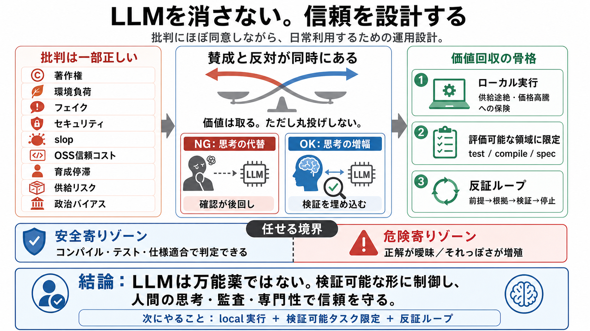

State of AI 2025: 100T Token LLM Usage Study | OpenRouter
Title: State of AI 2025: 100T Token LLM Usage Study | OpenRouter The past year has marked a turning point in the evoluti…

批判に“ほぼ同意”しながら、筆者は日常的にLLMを使う。その矛盾を、道徳論ではなく運用の設計として説明する。
著作権・環境負荷・倫理・フェイク・セキュリティなどの批判は一部正しい。一方で、筆者はLLMを毎日使って価値も取っている。
LLMを“答えの代役”にせず、“あなたの枠組みを加速する道具”として扱う。だから人間の検証（verification）が前提になる。
ベルリンのLocal-First Confで、著名エンジニアがLLMの危険性を語りつつ、Claude Codeのような環境も開いていた。
LLMを信頼で丸投げせず、制御・手順・検証がセットになるようにワークフローを設計する。
LLMが上手いと、外から「人間の思考が背後にあるか」が分かりにくい。だから“信頼の崩壊”が起きやすい。
Pi.devの例では、LLM由来の大量PR/大量Issueが実務として運用対策（自動クローズ等）につながっている。
筆者は、低品質（“slop”/スラップ）、OSSの信頼喪失、ジュニア育成の停滞、地政学リスク、政治バイアスなどを“ほぼ”認める。
質問を段階化し、理解の合意が取れるまで進めない。文脈を破壊して誤りを炙り出し、実行前のズレを潰す。
/grill-meのような手順は、LLMが理解不十分なまま“それっぽく実装”するのを防ぐ狙いがある。
Grill＝焼き出し（test/反証でズレを露出）
良否の基準が曖昧だと、LLMは多数派の好みに寄せた“それっぽさ”を出し、誤りが紛れやすくなる。
LLMは消せない。だから検証可能な形に制御し、人間の思考と信頼を守る。鍵は“人間側の設計・監査・専門性”。
次にやること（要点）： local実行＋検証可能なタスク限定＋反証ループ
Title: State of AI 2025: 100T Token LLM Usage Study | OpenRouter The past year has marked a turning point in the evoluti…
Title: All You Need is Loops (and Humans) | Jeremy Theocharis # All You Need is Loops (and Humans). Half handcraft their…
Title: llm-usage · GitHub Topics · GitHub ## Navigation Menu. # Search code, repositories, users, issues, pull requests.…
**Sponsored by:** Sonar — Gartner just named Sonar a Leader in the 2026 Magic Quadrant™ for Technical Debt Management To…
# GLM-4.7via OpenRouter. OpenRouter is a unified API gateway that provides access to hundreds of AI models from dozens o…